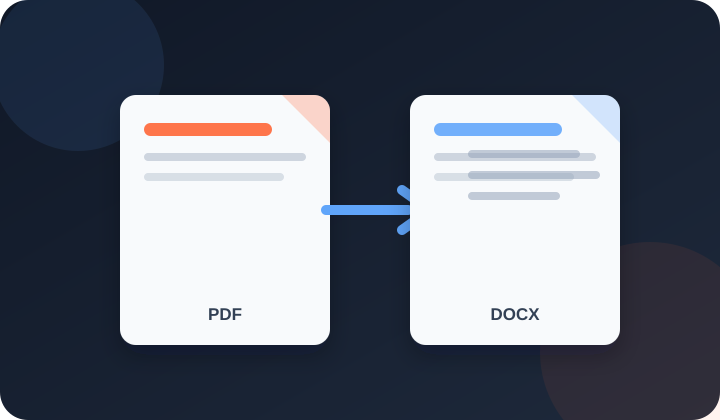

Turn digital or scanned PDFs into editable Word (.docx) files. Built-in OCR reads scans in 37 languages, and your PDF never leaves your device.

PDFdukan's PDF to Word converter online turns any PDF into an editable .docx file for free. Digital pages keep their text, headings, bold and italic, tables, images and links. Scanned pages are read with built-in OCR, so a photographed contract or receipt becomes text you can type over.
Two-column pages are read one column at a time, and broken lines are joined into real paragraphs you can edit.
Four steps take your PDF to a .docx for Word or Google Docs:
Each part becomes a normal Word element:
Pages with no text layer are read in 37 languages, including Urdu and Arabic set right to left.
Research papers are read down the left column first, then the right.
Split words are rejoined, and larger text becomes Word headings.
Text colors, highlights, table borders and cell colors carry over; photos, signatures and charts stay as pictures.
These limits apply to each conversion run:
| Item | Details |
|---|---|
| Input | One PDF, digital or scanned, up to 100 MB |
| Locked PDFs | Open after you type the password |
| Output | Word .docx, plain TXT or copied text |
| Pages | Up to 300 per run; up to 50 read with OCR |
Common jobs include:
Scan at 300 DPI and keep the page straight, as OCR misreads blurry text. If Word shows strange symbols, convert again with OCR every page. For long reports, cut out the pages you need with Extract PDF Pages.
No. PDFdukan reads the PDF, runs OCR and builds the .docx in your browser. The first scan downloads the open-source Tesseract OCR engine from a public CDN; your file is not sent to us.
Automatic mode keeps invoices, forms and designed pages in their exact layout, with the boxes and lines as a background picture and the words as editable text on top. Other pages become flowing paragraphs, where columns turn into one column. Form fields are not kept. For text from a photo, use Image to Text OCR.
Yes. PDFdukan is free, with no sign-up, daily cap or watermark, and OCR text in the .docx is fully editable.
Yes. Leave OCR on Auto and choose the language. Our scanned lease and receipt test scored a confidence estimate of about 95%.
Yes, typed or scanned; Word paragraphs are set right to left. Nastaleeq fonts like Jameel Noori are read with OCR, which misreads more words, so proofread.
Yes, if you know the password. Type it and click Unlock PDF; without it, the PDF cannot be read.
Edit the .docx, then add it to Word to PDF for a new PDF with your changes.
Connect Google Drive to save selected outputs to your own Drive storage. Review the destination before uploading sensitive documents.
No account? Sign Up free